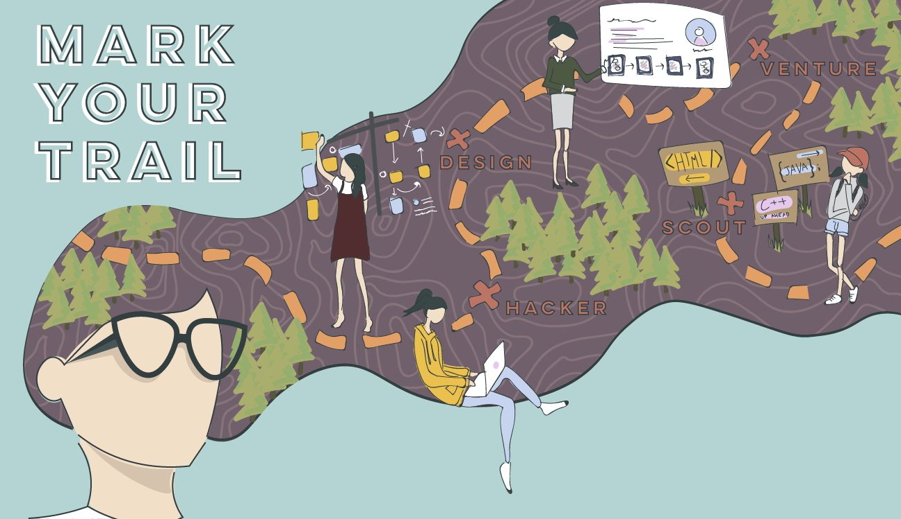
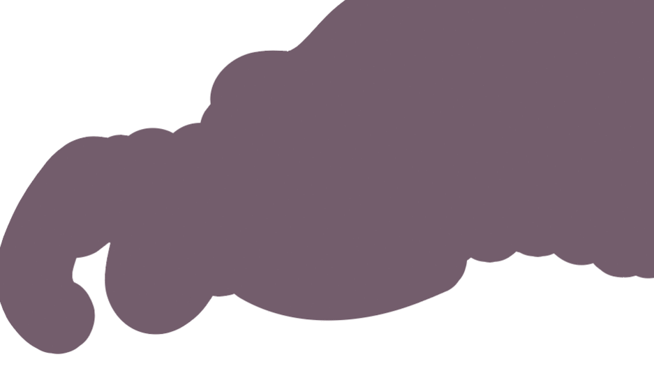

At Bitcamp 2018, the hackathon at the University of Maryland, there is an event called Colorwar where five contestants battle through five rounds of knockout design challenges. Judges pick prompts and, along with the crowd, determine one victor. The five contestants are first selected through submissions tagged on Twitter. This year's submission prompt was to create a visual that expresses your interpretation of Bitcamp’s “Mark Your Trail” theme. My submission got me into the five selected contestants, but sadly I was eliminated in the second round of competition.
My design shows the 4 unique "trails" UMD's Bitcamp Hackathon offers– Hacker, Design, Venture, and Scout. These trails allow coders, designers, entrepreneurs, and beginners to all partipate in one hackathon experience.
Some work-in-progress shots